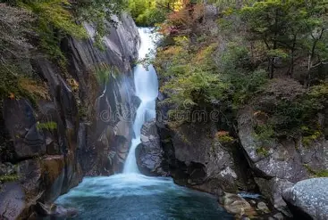
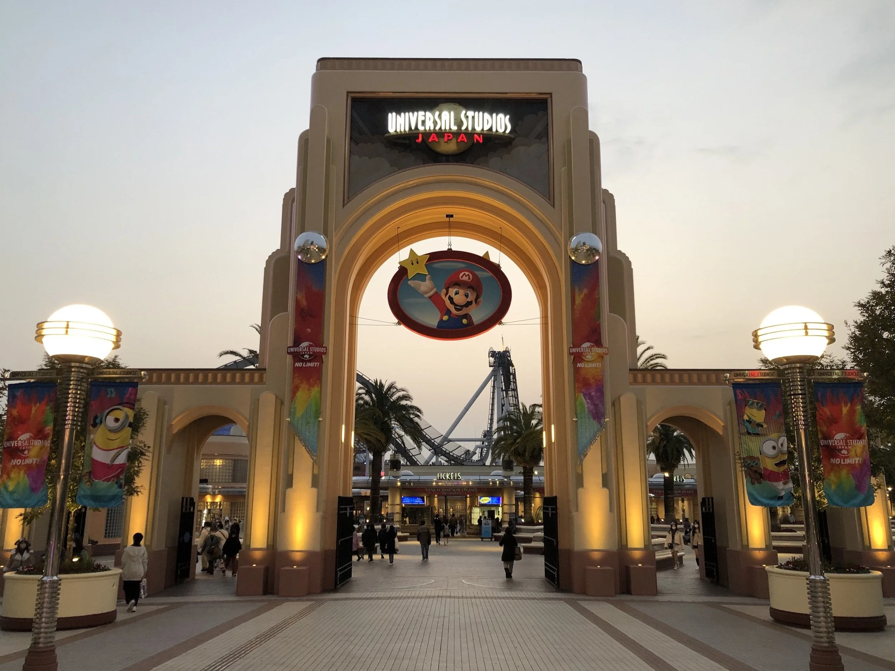
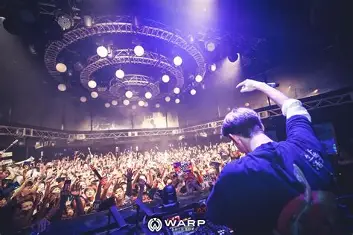

Shosenkyo Gorge
I've always enjoyed the outdoors and nature, and every once in a while I like to go on hikes. So while doing reaserch on Japan I came across a gorge called the Shosenkyo Gorge. Shosenkyo Gorge is in central Kofu in Chinchibi Tama Kai Natural park and looks beatuful. Shosenkyo Gorge 2.4 miles of breathing taking scenery, mountions you can hike up, and a captivating waterfall scenes. Shosenkyo is mostly popular during the autuim season and very much worth going.

Universal Studios Japan
I find theme parks to be really fun aswell. I've been to a number of theme parks but Universal Studios Japan looks out of this world. Universal Studios in Osaka Bay Japan is one of the most visted theme parks in Japan. Universal Studios Japan or "USJ" provides a unreal experenice with different themes depending on the season, With themes like Super Mario, The Wizarding World of Harry Potter, One piece and many more. USJ also has numerous amounts themed restaurants, rides, and stores to dable in while your there.

Wraps Shinijku
Japans night and club scene is a unique experince, and Wraps Shinijku provides the full experenice. Wraps Shinijku is a night club located in Shinijku Japans Red Light Distric and rated one of the best nightclubs in Japan. Inside the venue has hard-hitting sound, 4 bars, and 3 diffenrt dance floors to choose from. Wraps regularly invites popular internation acts that ranges from Hardstyle EDM DJ's, to live Hip-Hip arties.
